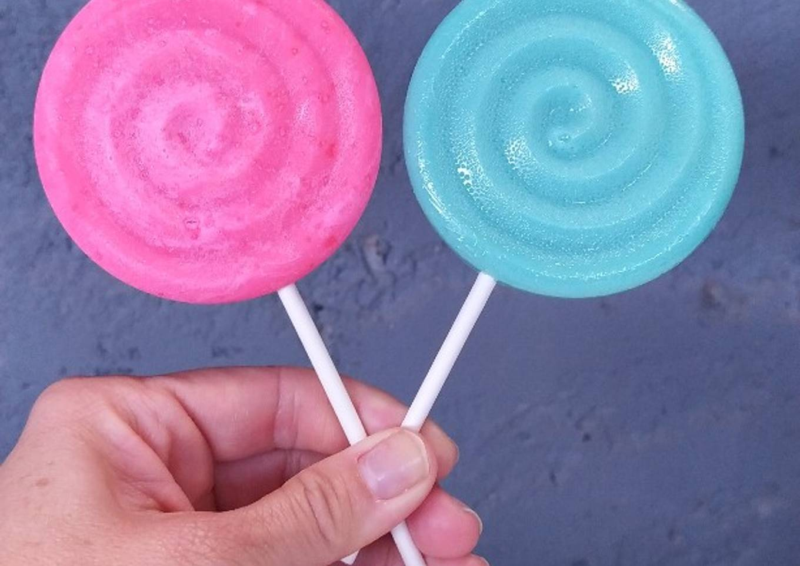
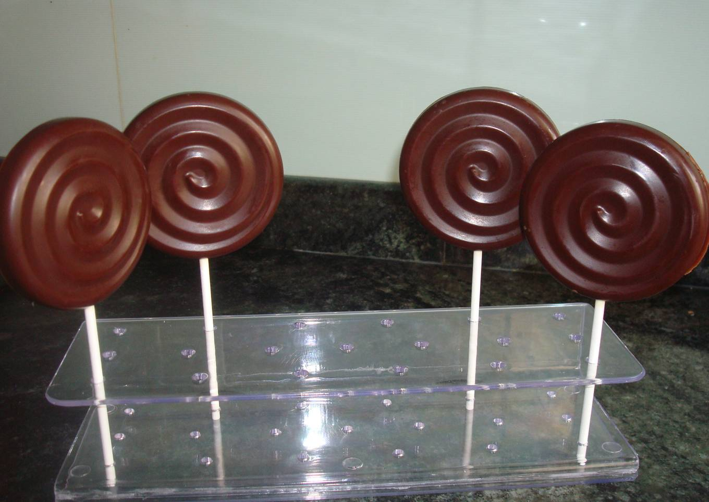
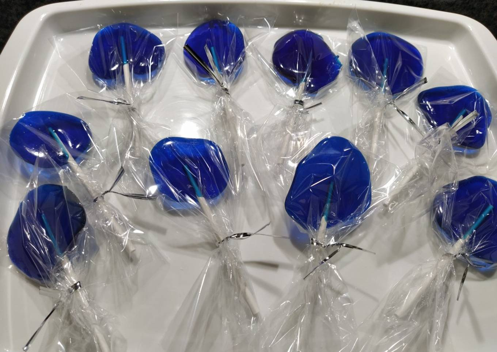
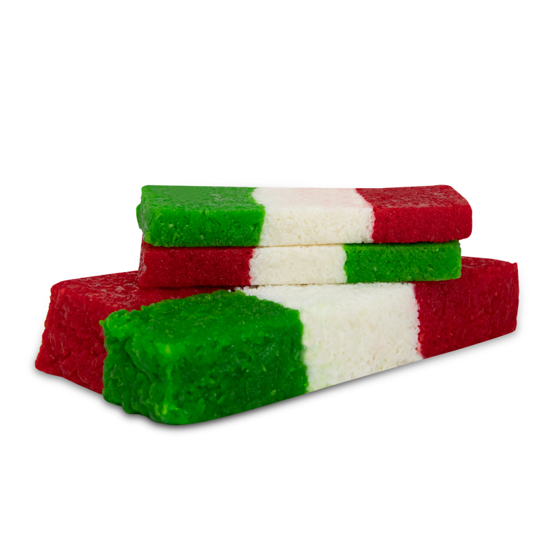

Paletas
Paletas de Caramelo
Ingredientes
- 1/2 taza de agua
- 1 taza de azúcar
- 1/3 de jarabe de maíz ligero
- Termómetro de azúcar
- Moldes de caramelo o una bandeja para hornear
- Palitos de paletas de caramelo
- Pasta colorante de alimentos (opcional)
- Aceites aromatizantes (opcional)
Pasos a seguir
- Engrasa o lubrica un poco los moldes de las paletas –o la bandeja para hornear– y coloca los palos en su lugar.
- Hierve el agua en la cacerola. Apaga el fuego y agrega el azúcar y el jarabe de maíz. Este último es un edulcorante que será el que aportará ese dulce y delicioso sabor a nuestras paletas de caramelo caseras.
- Enciende el fuego lento y revuelve lentamente para disolver todo el azúcar. Te recomendamos usar una cuchara o espátula de madera para ello.
- Coloca un termómetro en la cacerola y aumenta el calor del fogón. Deja que el dulce se cocine hasta que la temperatura alcance los 150 grados centígrados.
- Apaga el fuego, deja enfriar unos 5 grados, y agrega cualquier aceite aromatizante con colorante hasta que se mezclen.
- Vierte el caramelo. Deja reposar.
- Si utilizas una bandeja para hornear, vierte el dulce sobre los extremos de los palos, dejando distancia entre cada paleta de caramelo.
- Considera el aceite de canela o aceite de menta verde para dar sabor. Una vez que añades los colorantes y aromatizantes, trabaja con rapidez para que el caramelo no se endurezca antes de que lo viertas en los moldes.
--------------------------------------------------------------------------------------------------
Paletas de Chocolate
Ingredientes
- 100 gr. chocolate para postres.
- 2 cdas mantequilla
Paso a seguir
- Poner en un cazo al baño de María el chocolate troceado con la mantequilla.
- Cuando esté fundido, verter la mezcla en los moldes para piruletas con la ayuda de una cuchara.
- Dar unos golpecitos sobre el banco para que el chocolate se reparta de manera uniforme y no se formen burbujas.
- Dejar enfriar y meter en la nevera.
- Desmolda
--------------------------------------------------------------------------------------------------
Paleta Cristalizada
Ingredientes
- Azúcar
- Agua
- Tubos de decoración
Paso a paso
- En un cazo, poner 5 o 6 cucharadas de azúcar y una cucharada de agua.
- Cuando se forme el caramelo y empiece a dorarse, verter en los moldes de piruleta de silicona, con cuidado de no quemarnos y con la ayuda de una cuchara.
- Dejar que se enfríe.
- Poner en la nevera un rato y cuando estén completamente frías, desmoldar
-----------------------------------------------------------------------------------------------
Gomitas
Gomitas
Ingredientes
- 20 gramos de Colapez o Gelatina sin sabor.
- 90 gramos de Gelatina del sabor al gusto.
- 200 gramos de Azúcar granulada.
- 250 mililitros de Agua
- Azúcar para rebozar
Paso a seguir
------------------------------------------------------------------------------------------------------------------------
Cocadas
Bandera de Coco
Ingredientes
- 1 taza de coco rallado
- 1/2 taza de leche evaporada
- 1/4 taza de azúcar
- 1 cucharada de miel
- Colorante vegetal verde y rojo
Paso a seguir
- Coloca en tres ollas distintas la misma cantidad de azúcar, miel y el colorante. Debe ser un recipiente para la parte blanca, que no requerirá colorante, otra para la parte verde y otra para la roja.
- Deja hervir y mueve constantemente para que no se queme. En cuanto comience a burbujear agrega el coco en partes iguales para que espese.
- Deja enfriar por completo y toma pequeñas porciones para formar l.